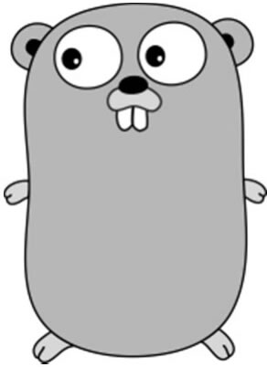

首页 > 编程笔记
Go语言是什么
Go 语言是如何诞生的？与其他编程语言相比，Go 语言有什么特点呢？本节我们将回答上述问题，带领大家了解 Go 语言。
Go 语言核心开发者为罗伯特·格瑞史莫（Robert Griesemer）、罗勃·派克（Rob Pike）及肯·汤普逊（Ken Thompson），他们都是国际顶级 IT 技术“大牛”：
他们都承认 C语言的低效，以及 C++ 语言在编译及内存资源释放等方面存在诸多缺点。那么，能不能开发一门既兼顾 C、C++ 语言的功能强大、运行速度快等优点，又兼顾 Python 等语言的易学、高效等优点的开发语言呢？于是，这几个“大牛”一拍即合，从 2006 年 1 月开始设计全新的 Go 语言，于 2009 年 11 月将其开源，并在 2012 年 3 月发布第一个稳定版本 Go 1。截至 2022 年 4 月，Go 语言的最新稳定版本是 Go 1.18。
根据著名的编程语言排行网站 TIOBE 2022 年 4 月的最新排名，Go语言进入排名 13 的位置，作为后起之秀，发展潜力很大。
目前，很多国内外知名 IT 企业都在使用 Go 语言，如 Google、Facebook、腾讯、百度、360、京东、小米、七牛云等。
Go 语言的标志是一只可爱的囊地鼠，如下图所示，由罗勃·派克的妻子——才华横溢的插画师蕾妮·弗伦奇（Renee French）设计。
如果学习 C、C++ 语言需要花费半年的时间，才能进入项目开发状态，那么学习 Go 语言只需要花费两个月的时间，这就是 Go 语言吸引人的地方。
显然，Go 语言吸收了 C、C++ 编译器的优点。
Go语言的产生
Go 语言（又称 Golang 语言）是一门开源的程序设计语言，意在让人们能够方便地构建简单、可靠、高效的软件。Go 语言核心开发者为罗伯特·格瑞史莫（Robert Griesemer）、罗勃·派克（Rob Pike）及肯·汤普逊（Ken Thompson），他们都是国际顶级 IT 技术“大牛”：
- 罗伯特·格瑞史莫是贝尔实验室 UNIX 团队成员，C语言、UNIX 和 Plan 9 的创始人之一；
- 罗勃·派克是贝尔实验室 UNIX 团队成员，Go 语言项目总负责人，还参与了 Plan 9、Inferno 操作系统、Limbo 编程语言的设计；
- 肯·汤普逊是 Google 公司的资深程序员，参与了 Java 虚拟机 HotSpot、Chrome 浏览器等的设计；
他们都承认 C语言的低效，以及 C++ 语言在编译及内存资源释放等方面存在诸多缺点。那么，能不能开发一门既兼顾 C、C++ 语言的功能强大、运行速度快等优点，又兼顾 Python 等语言的易学、高效等优点的开发语言呢？于是，这几个“大牛”一拍即合，从 2006 年 1 月开始设计全新的 Go 语言，于 2009 年 11 月将其开源，并在 2012 年 3 月发布第一个稳定版本 Go 1。截至 2022 年 4 月，Go 语言的最新稳定版本是 Go 1.18。
根据著名的编程语言排行网站 TIOBE 2022 年 4 月的最新排名，Go语言进入排名 13 的位置，作为后起之秀，发展潜力很大。
目前，很多国内外知名 IT 企业都在使用 Go 语言，如 Google、Facebook、腾讯、百度、360、京东、小米、七牛云等。
Go 语言的标志是一只可爱的囊地鼠，如下图所示，由罗勃·派克的妻子——才华横溢的插画师蕾妮·弗伦奇（Renee French）设计。

图 1 Go语言的标志
图 1 Go语言的标志
Go语言的特点与优势
Go 语言是对 C、C++ 等类似语言的一次重大改进，它不但可以开发基于底层的操作系统，还为应用系统开发提供了强大的网络编程、并发编程等支持。1、简单易学
当读者面对 C、C++、Java、C#、PHP、R、Python、Ruby、Perl 等一长串编程语言清单时，选择一款易学且功能强大的编程语言是首要任务，也是罗伯特·格瑞史莫他们深入思考的问题。于是，他们在设计 Go 语言时，充分吸收了 C、C++ 语言的优点，如快速编译执行，并采用了它们的语法格式风格，保留了它们强大的面向操作系统的开发功能；避免了让人头疼的古怪指针的用法，将手动处理内存垃圾转变为自动处理，进一步统一并保证了语法的简练性；同时，根据最新发展趋势，增加了简单易用的并发处理、网络开发功能等。如果学习 C、C++ 语言需要花费半年的时间，才能进入项目开发状态，那么学习 Go 语言只需要花费两个月的时间，这就是 Go 语言吸引人的地方。
2、功能强大
1) 自带垃圾回收（Garbage Collection，GC）功能
程序员无须关心在内存里执行完的代码如何被清理，因为 Go 语言自带垃圾回收功能。而在 C、C++ 语言中，这是需要程序员考虑并处理的，很容易出错，是这类编程语言的一大缺陷。2) 快速编译功能
Go 语言自带编译器，用于一次性把代码转换为二进制（或字节）形式的可执行命令包。在 Windows 下，编译器是指扩展名为“.exe”“.dll”的可执行程序。先编译再执行软件功能的过程叫作编译执行。边把代码翻译成机器码边执行代码功能的过程叫作解释执行。显然，在软件功能执行效率上，解释执行不如编译执行。另外，Go 语言的编译速度要快于Java这样的编译语言（Java 最早是脚本语言，后续增加了编译器）。显然，Go 语言吸收了 C、C++ 编译器的优点。
3）简洁的设计思路
Go 语言的语法简洁，没有对象、类等复杂的概念和实现要求，这显然是针对 C、C++ 来说的。它借鉴了 Python 简洁的语言设计风格，但是语法简洁并不等同于功能简单，很多强大的功能都可以通过新方法来体现。例如并发功能，只需要使用一个关键字就可以实现，这在其他编程语言中是不可想象的。4）突出最新发展需求——并发
在大数据、云平台、人工智能、物联网技术快速发展的情况下，利用并发技术提高运算力是当前的一种需求和趋势。罗伯特·格瑞史莫他们抓住了这个细分市场需求，确定了 Go 语言在多核 CPU 并发运行方面的设计优势，使其从底层支持并发，而且简单易用，可以说“Go语言为并发而生”。5) 提供快速Web开发功能
网站（Web）是针对当今业务系统的一种主流开发模式。Go 语言提供了强大的 Net/HTTP 功能开发模块，只需要几行语句，就可以实现一个高性能的网站后台服务功能，非常具有吸引力。6) 支持交叉编译
所谓交叉编译，就是使用 Go 语言开发的代码可以在不同类型的操作系统下编译并运行。例如，在 Windows 下开发的代码可以在 Linux 下编译并运行。7) 第一门完全支持UTF-8的编程语言
UTF-8 可以兼容全球不同语言，如中文、日文、蒙古语等。Go 语言对其提供了完整的支持，真正做到了国际化。3、应用领域广泛
Go 语言的应用领域非常广泛，如 Web 开发、分布式和微服务开发、网络编程、数据库系统及容器虚拟化开发、人工智能、云平台开发、游戏开发、爬虫开发、数据分析及科学计算、系统运维等。关注公众号「站长严长生」，在手机上阅读所有教程，随时随地都能学习。内含一款搜索神器，免费下载全网书籍和视频。

微信扫码关注公众号